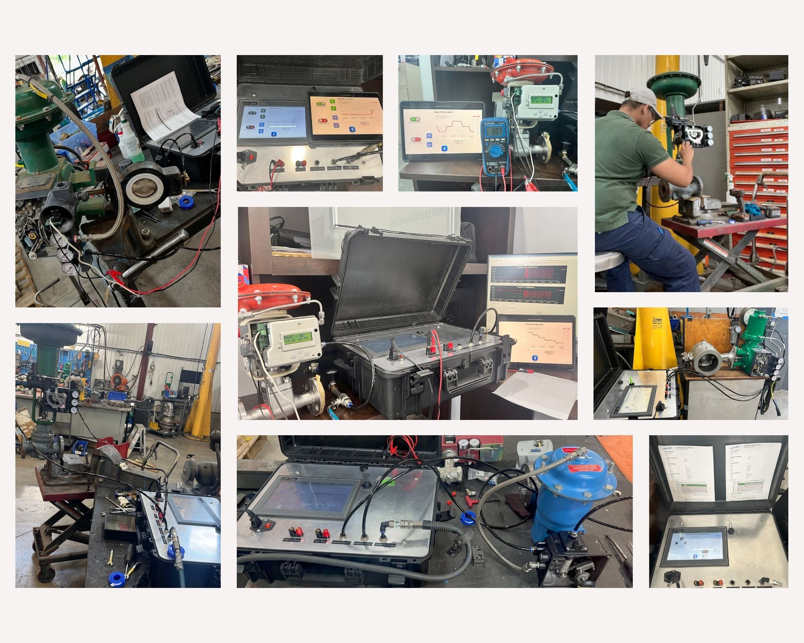
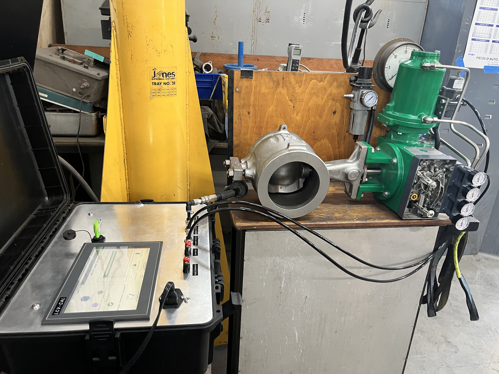

LCV-CAL™
Automatización inteligente para calibración de válvulas industriales
Ponente: Ing. Luis Marroquin
Tragedia en la Refinería de BP Texas
El 23 de marzo de 2005, una explosión e incendio en la refinería de petróleo de BP en Texas City, la más grande del país, causó la muerte de al menos 14 personas y dejó a más de 100 heridos.
"La explosión ocurrió mientras la planta, la más grande de BP en la nación, se estaba reiniciando después del mantenimiento anual." - The New York Times, 24 de marzo de 2005.
Costos de la inactividad no planificada
Petroquímica y Petróleo y Gas
~170 000 USD / hora
*Costo estimado basado en una pérdida de 1 a 3 millones de dólares por una parada de 12 a 24 horas debido a una falla de un sistema de válvula de control. (Ref. 2, ISA)*
Industria Alimentaria y de Bebidas
> 50 000 USD / lote
*Costo de pérdida de lote de lote de producción debido a una falla de una válvula de control. (Ref. 6, Food Engineering Magazine)*
Producción de Energía
Decenas de miles USD / hora
*Costo de la reducción de capacidad (derating) debido a problemas de control de flujo, a menudo relacionados con las válvulas. (Ref. 5, EPRI)*
Mejora con mantenimiento predictivo
Reduce las paradas no planificadas en un 30%
*Mejora observada en un estudio de caso de una planta petroquímica. (Ref. 2, ISA)*
Impacto Financiero de las Fallas de Válvulas por Industria
*Datos basados en los costos de parada no planificados y las estimaciones de pérdida de producción asociados con los sistemas de válvulas de control.*
El Costo de la Inactividad y la Ventaja LCV-CAL™
Impacto de una Mala Calibración
*La relación entre el costo y el riesgo es conceptual e ilustra el aumento del impacto en función de la situación.*
Reducción del Tiempo de Calibración
LCV-CAL™: La Solución Todo-en-Uno
Ventajas Clave
- Portabilidad y Simplicidad: Un equipo todo-en-uno que elimina la necesidad de múltiples instrumentos.
- Eliminación del Error Humano: Proceso de calibración automatizado para resultados consistentes y sin fallas.
- Generación de Informes sin Costos Adicionales: Cree informes de calibración en PDF sin software externo ni licencias.
- Diagnóstico Rápido: Un diagnóstico preciso previene las fallas y minimiza las costosas paradas de producción.
LCV-CAL™ es un equipo portátil e innovador diseñado para calibrar, probar y certificar los posicionadores de válvulas, eliminando las ineficiencias y los riesgos de forma definitiva.
Equipo LCV-CAL™ realizando pruebas y calibración en una válvula de control.
Ingeniería de Precisión: Características Clave
Arquitectura del Sistema
- PLC Robusto: Control lógico avanzado y confiable.
- Pantalla táctil HMI: Interfaz de usuario intuitiva y robusta.
- Regulación de aire integrada: Simplifica la configuración y el transporte.
- Medición precisa: Sensores de alta fidelidad para una fiabilidad total.
Ventajas Competitivas
- Portabilidad total.
- Doble capacidad: Eléctrica y neumática.
- Funciones automáticas avanzadas.
- Conectividad moderna: Wi-Fi y USB.
- Informes certificados en PDF.

Demostración: Proceso Tradicional de Calibración
Vea las ineficiencias del método tradicional y la complejidad de las pruebas manuales.
Demostración: Prueba de Fuga con LCV-CAL™
Una prueba rápida y precisa para identificar fallas críticas que causan fugas.
Demostración: Prueba de Fuga con LCV-CAL™ (posicionador OK)
Realice una prueba específica y rápida para la calibración del posicionador.
Demostración: Prueba de Fuga con LCV-CAL™ (posicionador defectuoso)
Realice una prueba específica y rápida para la calibración del posicionador.
Demostración: Prueba de Arranque (Décollage)
Aprenda a realizar la prueba de 'decollage' de forma automatizada, vital para el rendimiento de la válvula.
Demostración: Calibración de Posicionador Neumático sin certificado
Vea cómo el LCV-CAL™ simplifica la calibración de dispositivos neumáticos, un proceso que suele ser complejo.
Demostración: Calibración de Posicionador Neumático con certificado
Vea cómo el LCV-CAL™ simplifica la calibración de dispositivos neumáticos y genera un reporte de calibración en tiempo real para una documentación y trazabilidad inmediatas.
Demostración: Posicionadores Electroneumaticos
Vea la facilidad y rapidez de calibración de sus posicionadores electroneumáticos.
Demostración: Posicionadores Inteligentes y HART
LCV-CAL™ puede trabajar de manera articulada con software y un módem de comunicación HART para una interacción completa con posicionadores inteligentes y el protocolo HART.
Maximice Su Retorno sobre la Inversión (ROI)
Ahorro de Tiempo
75%
Reducción promedio del tiempo de calibración, pasando de 120 a 30 minutos.
Reducción de Costos
~2 000 USD
Ahorros estimados por válvula al año, debidos a la reducción de paradas imprevistas.
Precisión Inigualable y Conformidad
99.8%
Reducción de errores humanos en la calibración, garantizando resultados consistentemente y superiores.
*Estas estimaciones están basadas en estudios de caso y datos de la industria, mostrando el potencial de retorno sobre la inversión para su planta.*
Referencias y Fuentes
- 1. International Society of Automation (ISA). (2022). Estudio de caso sobre los costos de las paradas no planificadas.
- 2. Electric Power Research Institute (EPRI). (2021). Informe sobre la confiabilidad de las centrales eléctricas.
- 3. PricewaterhouseCoopers (PwC). (2020). Informe sobre el costo real de la inactividad industrial.
- 4. Kaizen Institute y FourJaw. (2021). Estudio conjunto sobre el tiempo de inactividad en la fabricación.
- 5. Food Engineering Magazine. (2022, septiembre). Artículo sobre las pérdidas de producción en la industria alimentaria.
- 6. ARC Advisory Group. (2023). Análisis del mercado de la instrumentación y del mantenimiento industrial.
- 7. Emerson Automation Solutions. (2022). Libro blanco sobre la calibración y el mantenimiento predictivo.
- 8. Control Engineering Magazine. (2023, enero). Artículo técnico sobre las mejores prácticas de calibración.
- 9. Sisson, S. W. H. (2021). Calibración de Posicionadores de Válvulas. Publicación académica.
- 10. Blumenthal, R. (2005, 24 de marzo). 14 Die in Blast at BP Oil Refinery in Texas. The New York Times. Enlace al artículo.
¿Listo para transformar su mantenimiento?
Solicite mas informaciónPara más consultas y proyectos: